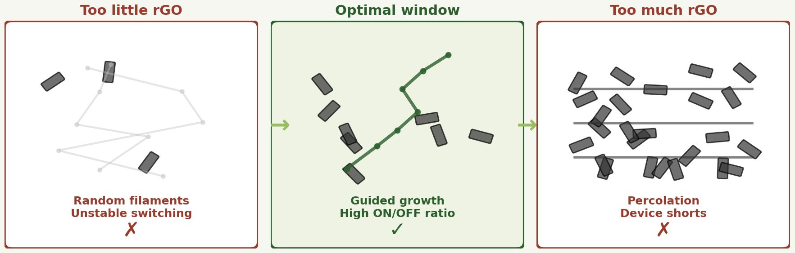
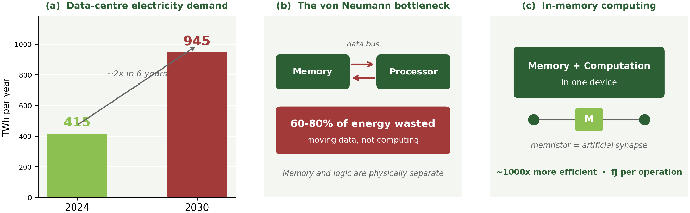
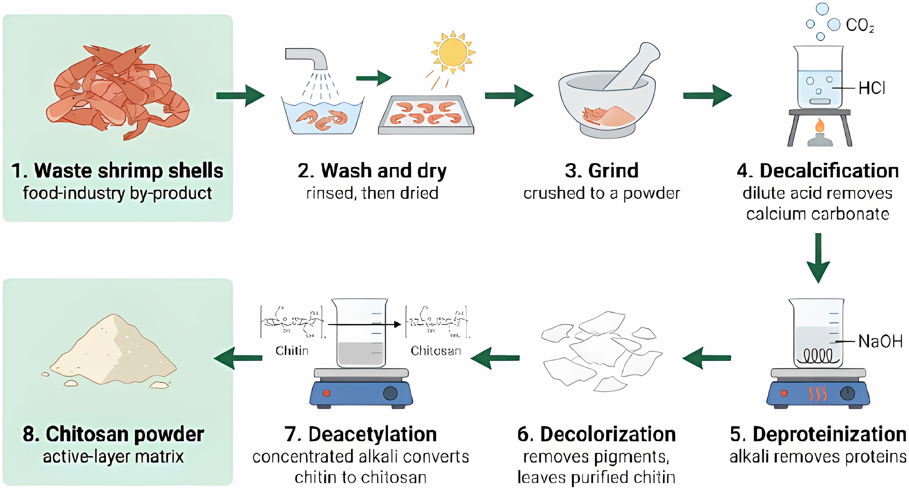
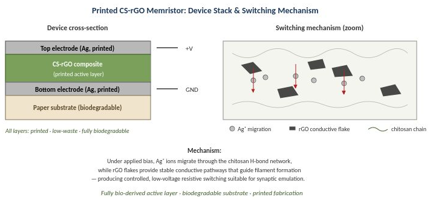
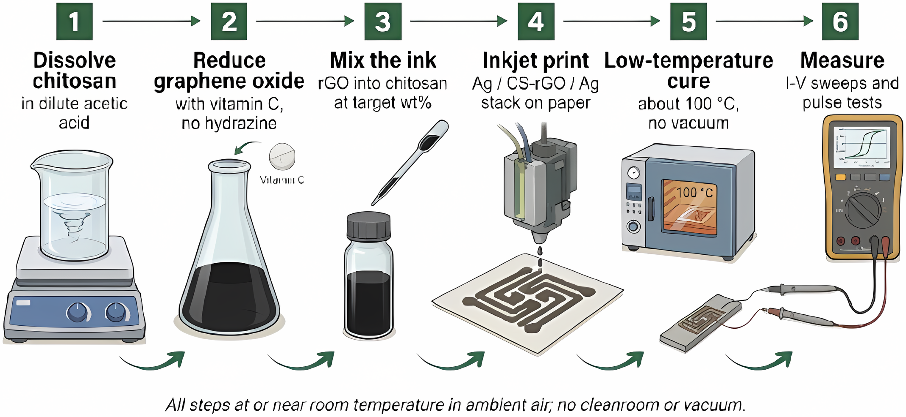
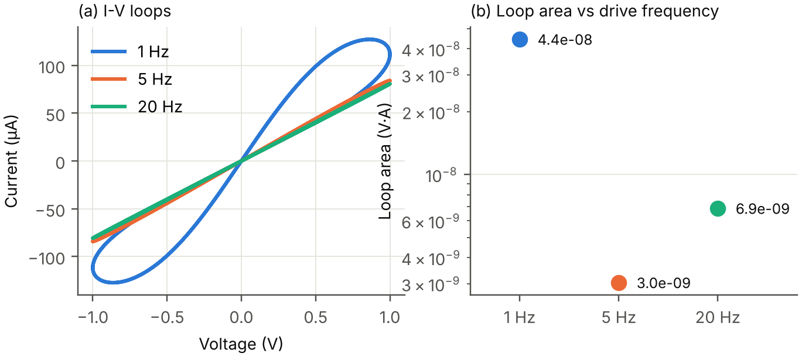
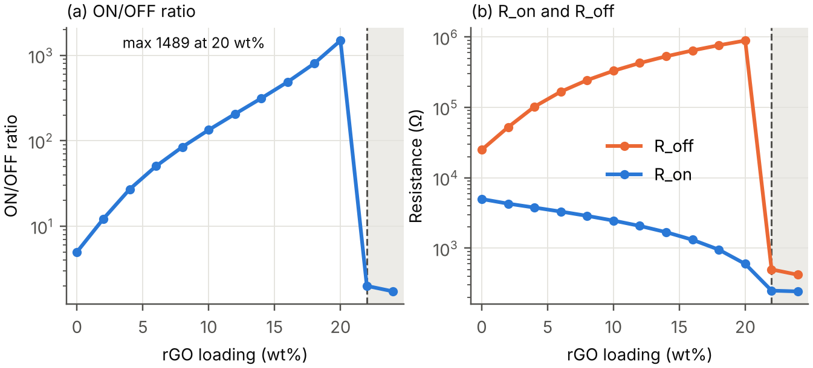
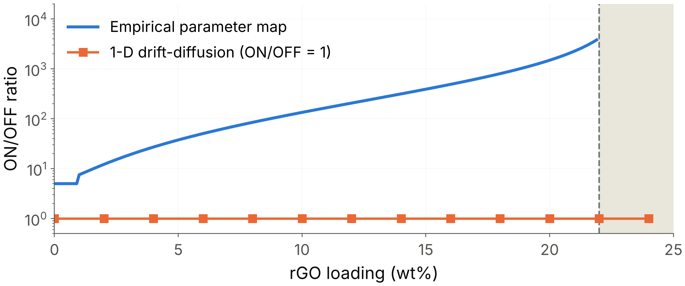
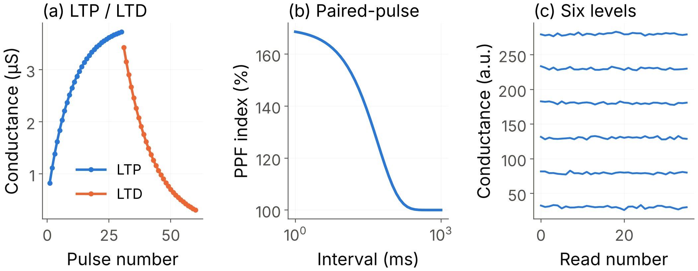

The problem. AI's energy demand is outpacing hardware efficiency: data-centre electricity use is projected to rise from ~415 TWh (2024) to ~945 TWh (2030) [1]. In a von Neumann computer, memory and processor are separate, so 60–80% of the energy moves data rather than computing with it [1].

Memristors store a weight and compute with it in the same device [9, 11, 19], ~1000× more efficient than CMOS at fJ per operation [5, 7]. But the best ones use HfO2/TaOx deposited in vacuum above 300 °C on non-degradable substrates [3, 4] — trading an energy crisis for an e-waste crisis. Biopolymer devices are greener but reach only 103–104 ON/OFF and 500–104 cycles [3, 6].
The gap. Zhao et al. [5] used chitosan–rGO but did not print it or use paper; Chen et al. [2] printed 5,200 memristors on paper but with inorganic materials; Min & Cho [6] showed a filler widens the window but found no optimal loading.
Research question: Can a printed chitosan–rGO composite on paper act as a fully biodegradable memristor for neuromorphic computing — and at what rGO loading is it best?
Hypothesis: ON/OFF is non-monotonic in rGO loading, peaking just below the percolation threshold [13].
Objectives: O1 pinched hysteresis vs frequency · O2 ON/OFF, Vset & analog states vs loading · O3 independent physics cross-check · O4 synaptic behaviour (LTP/LTD, PPF, multilevel) · O5 ink inside the printability window · O6 lab test of the falsifiable prediction.
Chitosan (matrix) is extracted from shrimp-shell waste (Fig. 3); its amine/hydroxyl network lets Ag+ ions migrate under bias. rGO (reduced with vitamin C, not hydrazine) concentrates the field so filaments grow along guided paths → gradual, multi-level switching.



Ink checked before printing: particle <300 nm, viscosity 1–30 cP, surface tension 35–70 mN/m, Z = 1–10 [14, 15]. Cost <$1/device consumables.
Variables. Independent: rGO loading 0–24 wt% (2 wt% steps). Dependent: ON/OFF, Vset, analog states. Controlled: 200×200 µm electrodes, 150 nm layer, ±2 V at 0.1 V/s, 0.8 V/50 µs pulses, 25 °C. Controls: pure chitosan (–), HfO2 data [4] (+).
Lab plan. ≥10 devices per loading (0–24 wt%); mean ± SD, one-way ANOVA (α = 0.05) + Tukey HSD; ±10% sensitivity on every input incl. φc. Safety: fume hood for 5% acetic acid, Ag-ink waste via chemical-waste programme; ISEF Form 1A.




Table 1 Closest studies and what each leaves open.
| Study | Active layer | Substrate / process | Not addressed |
|---|---|---|---|
| Zhao [5] 2022 | Chitosan–rGO | Not printed; not paper | Printing; paper |
| Min & Cho [6] 2021 | Chitosan + CNT | TFT-gated memory | Optimal filler loading |
| Chen [2] 2025 | Inorganic | Inkjet on paper, 5,200 devices, >90% yield | Bio-derived layer |
| Zhang [3] 2026 | Biopolymers (review) | Various; ON/OFF ~106 | Printed on paper |
| This project | Chitosan–rGO | Inkjet-printed on paper, Ag electrodes | Measurements (planned) |
Four simulation models suggest that a printed chitosan–rGO memristor on paper could reach an ON/OFF ratio of ~1.5×103 at ~20 wt% rGO — inside the 103–104 range neuromorphic learning needs [12, 18] — while being bio-derived, biodegradable and printed near room temperature. These results set the composition range for the first experiments; they do not demonstrate device performance.
Table 3 Simulated value vs published devices.
| Device | ON/OFF | Vswitch | Endurance |
|---|---|---|---|
| CS-rGO 20 wt% (sim.) | ~1.5×103 | n/c | n/c |
| Chitosan + CNT [6] | ~15 | 0.8 V | ~200 cyc. |
| Biopolymers [3] | ≤~106 | – | – |
| HfO2 [4] | 106–108 | 0.3–0.8 V | 109–1011 |
Low-cost, compostable synaptic hardware for edge-AI and disposable sensors, made from shellfish waste without vacuum or cleanroom.
| 27 Nov–7 Dec | Lab access, risk assessment, materials ($500–850); fix models (couple percolation, solve VTEAM, 1–200 Hz sweep, ±10% sensitivity) |
| 8–25 Dec | Formulate ink → printability go/no-go; 5-device pilot at 12 wt% (continue if ≥3/5 switch) |
| 26 Dec–16 Jan | Print ≥10 devices at 0, 4, 8, 12, 16, 18, 20, 22, 24 wt% (90 devices) |
| 17 Jan–21 Feb | I-V, synaptic, endurance & retention tests; ANOVA + Tukey; measure real threshold |
| 22–28 Feb 2027 | Replace simulated results with measured data. Refuted if ON/OFF rises monotonically 0–24 wt% with no collapse. |
Location: King Abdulaziz University, Jeddah (subject to change). Code & data: github.com/Mohammed200923/cs-rgo-memristor-sim (QR code above).